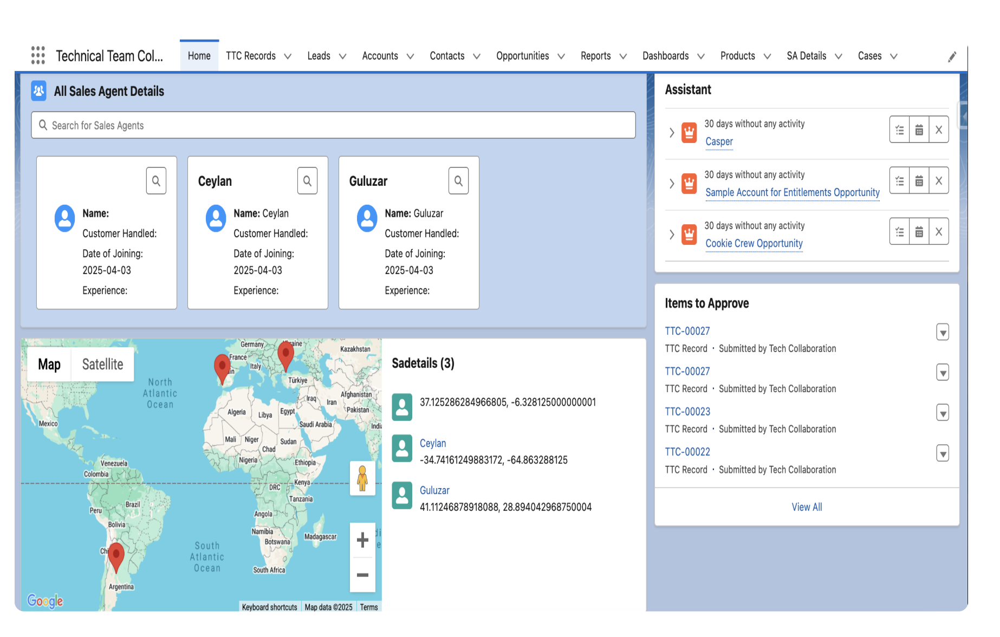

Developed a dynamic Lightning Web Component (saMap) that integrates with Salesforce's Lightning Message Service (LMS) to render real-time map markers based on updates to service appointment data. Implemented efficient subscription and cleanup logic using connectedCallback and disconnectedCallback lifecycle hooks. Leveraged LMS to subscribe to a custom message channel (SAListUpdate__c) and dynamically update geolocation data (Latitude and Longitude) on the map. Ensured modular and maintainable code by using the @wire decorator for context injection and modern JavaScript features for data transformation and rendering.

import {LightningElement, wire} from "lwc";
import {subscribe, unsubscribe, MessageContext} from "lightning/messageService";
import SA_LIST_UPDATE_MESSAGE from "@salesforce/messageChannel/SAListUpdate__c";
export default class SaMap extends LightningElement {
mapMarkers = [];
subscription = null;
@wire(MessageContext) messageContext;
connectedCallback() {
this.subscription = subscribe (this.messageContext, SA_LIST_UPDATE_MESSAGE,
(message) => {
this.handlesAListUpdate(message);
});
}
disconnectedCallback() {
unsubscribe(this.subscription);
this.subscription = null;
}
handlesAListUpdate(message){
this.mapMarkers = message.sadetails.map((sadetail) => {
const Latitude = sadetail.Location__Latitude__s;
const Longitude = sadetail.Location__Longitude__s;
return{
location: {Latitude, Longitude},
title: sadetail.Name__c,
description: `Coords: ${Latitude}, ${Longitude}`,
icon: "standard:people"
};
});
}
}